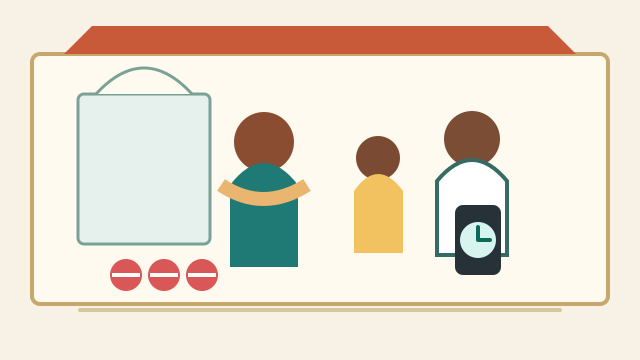
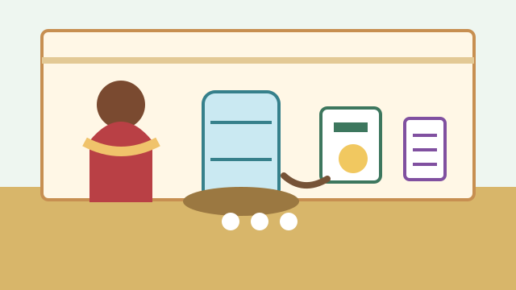
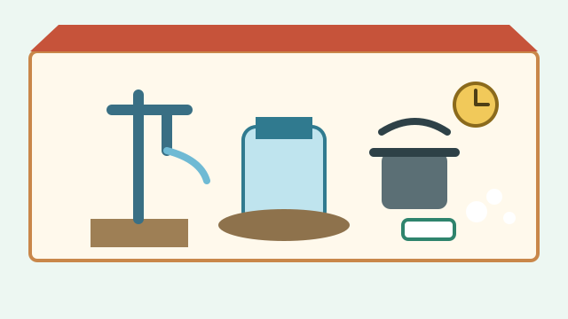
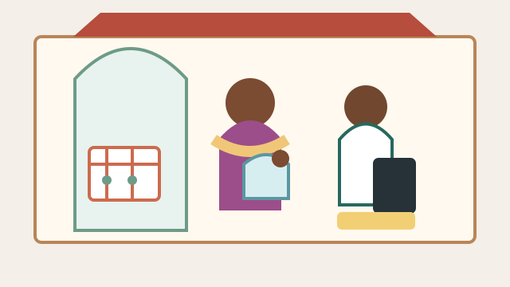
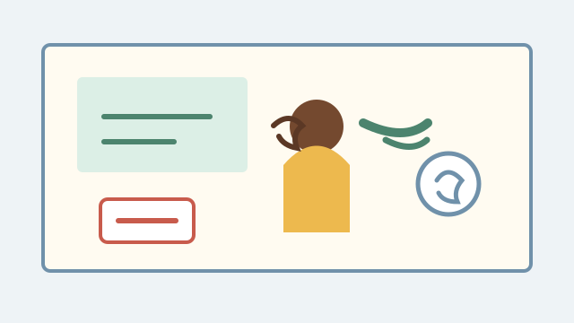

North India Draft Graphics
Prototype SVGs, $0 spend, review-gated. These are placeholders for local/clinical review, not final field art.

Child triage / breathing countClinic courtyard, caregiver, child, CHW, timer.

ORS + zincKitchen table, clean water, cup, packet placeholders.
DentalChild, caregiver, toothbrush, timer, clinic cue.

WASH homeHand pump, covered water, soap, boiling pot.

Maternal/newborn visitsClinic doorway, mother/baby, CHW, calendar.
Delivery kitClean cloths, documents, phone contact, transport.
Menstrual private modulePrivate wash corner, supplies, calendar, shield.

Hearing / school healthSchool room, child, caregiver, sound cue.
Household checklistClinic contact, medicines, water, transport, review.